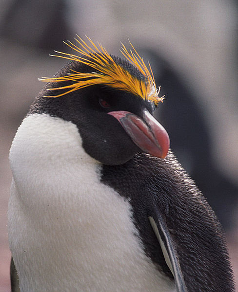

The term crested penguin is the name given to several species of penguin of the genus Eudyptes. The exact number varies between four and seven depending on the authority, and a Chatham Islands species may have become extinct in the 19th century. All are black and white penguins with yellow crests and red bills and eyes, and are found on subantarctic islands in the world's southern oceans. All lay two eggs but raise only one young per breeding season; the first egg laid is substantially smaller than the second.
